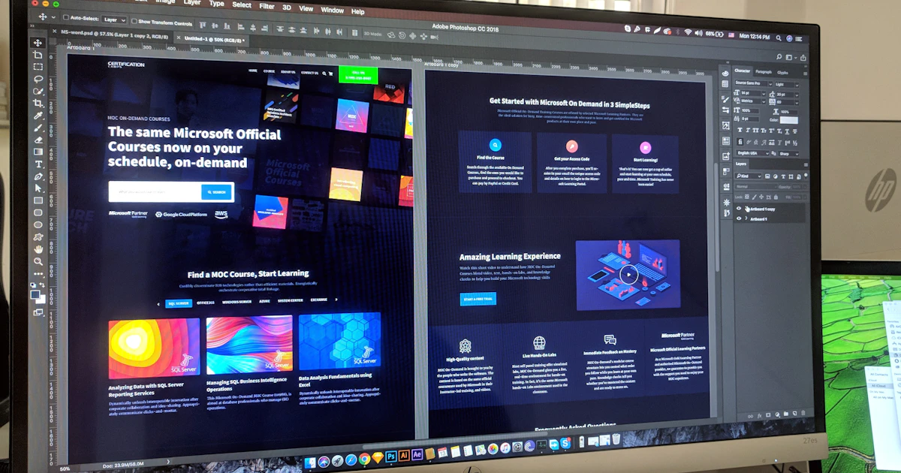

งานวิจัยพบว่าผู้เข้าชมใช้เวลาเพียงราว 0.05 วินาที ในการตัดสินใจว่าจะ "ชอบ" หรือ "ไม่ชอบ" เว็บไซต์ของคุณ และความประทับใจแรกนั้นเกิดจากดีไซน์เป็นหลัก ก่อนที่เขาจะทันได้อ่านข้อความสักคำ (Lindgaard et al., 2006) นั่นแปลว่าการออกแบบที่ดีไม่ใช่เรื่อง "สวยงามเฉย ๆ" แต่คือด่านแรกที่ตัดสินว่าลูกค้าจะอยู่ต่อหรือกดปิด
ปัญหาคือหลายคนพอจะเริ่มทำเว็บก็มักเปิดหน้าจอเปล่า ๆ แล้วนึกไม่ออกว่าจะเริ่มจากตรงไหน จัดวางอย่างไรถึงจะดูดี ใช้สีแบบไหน — ทั้งที่จริงแล้วดีไซเนอร์มืออาชีพเองก็ไม่ได้คิดทุกอย่างขึ้นมาจากศูนย์ พวกเขามีคลัง "แหล่งหาไอเดีย" ที่เข้าไปดูเป็นประจำ เพื่อจุดประกายและเห็นว่าเว็บระดับโลกเขาทำกันอย่างไร
บทความนี้รวบรวม 15 แหล่งหาแรงบันดาลใจในการออกแบบเว็บไซต์ที่ใช้ได้จริงในปี 2026 โดยแบ่งเป็นกลุ่มตามการใช้งาน ตั้งแต่แกลเลอรีเว็บสวยระดับรางวัล ไปจนถึงคลังภาพหน้าจอแอปจริง พร้อมคำแนะนำว่าแต่ละแหล่งเหมาะกับใคร และที่สำคัญที่สุด — จะเปลี่ยน "แรงบันดาลใจ" ให้เป็นเว็บของคุณเองอย่างไรโดยไม่กลายเป็นการลอกเลียนแบบ
ข้อสังเกตจากประสบการณ์จริง: การหาไอเดียก่อนลงมือทำไม่ใช่การ "ผัดวันประกันพรุ่ง" แต่คือขั้นตอนที่ช่วยประหยัดเวลาที่สุด เพราะการเห็นตัวอย่างดี ๆ 20-30 เว็บก่อนเริ่ม ช่วยให้คุณตัดสินใจเรื่องโครงสร้าง สี และฟอนต์ได้เร็วขึ้นมาก แทนที่จะลองผิดลองถูกไปเรื่อย ๆ
สรุปบทความ
- ผู้ชมตัดสินเว็บของคุณภายในราว 0.05 วินาที และ 75% ตัดสินความน่าเชื่อถือของธุรกิจจากหน้าตาเว็บ (Stanford Web Credibility)
- แกลเลอรีเว็บระดับรางวัลอย่าง Awwwards, Godly, SiteInspire เหมาะกับการหาไอเดียงานดีไซน์ที่ประณีต
- ชุมชนนักออกแบบอย่าง Dribbble, Behance, Pinterest ให้ไอเดียหลากหลายและกว้างที่สุด
- คลังอ้างอิง UI อย่าง Mobbin และ Refero รวมภาพหน้าจอจากแอปและเว็บจริงหลายแสนหน้า เหมาะกับงานที่เน้นใช้งานได้จริง
- เคล็ดลับสำคัญคือ "หยิบหลักการ ไม่ลอกหน้าตา" — รวบรวมไอเดียจากหลายเว็บแล้วผสมให้เข้ากับแบรนด์ของคุณเอง
ทำไมต้องเริ่มจากการหาไอเดีย ไม่ใช่ลงมือทำเลย
ก่อนจะพาไปดูรายชื่อทั้ง 15 แหล่ง ต้องเข้าใจก่อนว่าทำไมขั้นตอนนี้ถึงสำคัญ หน้าตาของเว็บไม่ได้มีผลแค่ความสวยงาม แต่ส่งผลโดยตรงต่อความน่าเชื่อถือของธุรกิจ งานวิจัยของ Stanford Web Credibility Project พบว่าผู้ใช้ราว 75% ยอมรับว่าตัดสินความน่าเชื่อถือของบริษัทจากการออกแบบเว็บไซต์ (Stanford Web Credibility) เว็บที่ดูเก่าหรือจัดวางมั่ว ๆ จึงทำให้ลูกค้าลังเลตั้งแต่ยังไม่ได้อ่านเนื้อหา
การเข้าไปดูแหล่งไอเดียเป็นประจำให้ประโยชน์กับคุณหลายอย่างพร้อมกัน:
- เห็นมาตรฐานปัจจุบัน — เทรนด์การออกแบบเปลี่ยนทุกปี การดูเว็บใหม่ ๆ ช่วยให้เว็บของคุณไม่ดูล้าสมัย
- แก้ปัญหาเฉพาะจุดได้เร็ว — ไม่รู้จะจัดหน้าราคาอย่างไร หรือหน้า Contact ควรมีอะไรบ้าง เข้าไปดูว่าเว็บชั้นนำเขาทำกันแบบไหน
- สื่อสารกับทีมหรือผู้รับงานได้ชัดขึ้น — แทนที่จะบอกว่า "อยากได้เว็บดูดี ๆ" คุณส่งลิงก์ตัวอย่างที่ชอบไปได้เลย ช่วยลดการแก้งานไปมา
มุมมองที่คนมักมองข้าม: เป้าหมายของการหาไอเดียไม่ใช่การหา "เว็บที่จะลอก" แต่คือการฝึกสายตาให้แยกออกว่าอะไรทำให้เว็บดูดีและใช้งานง่าย เมื่อคุณดูตัวอย่างมากพอ คุณจะเริ่ม "รู้สึก" ได้เองว่าดีไซน์แบบไหนเวิร์ก แบบไหนไม่เวิร์ก
กลุ่มที่ 1: แกลเลอรีเว็บสวยระดับรางวัล
กลุ่มนี้คือเว็บที่ "คัดมาแล้ว" โดยกรรมการหรือทีมบรรณาธิการ จุดเด่นคือคุณภาพงานสูงและได้ดูเว็บจริงที่กดเข้าไปเล่นได้ เหมาะที่สุดสำหรับการหาแรงบันดาลใจด้านความประณีตของงานออกแบบ อนิเมชัน และการเล่าเรื่องด้วยภาพ
| แหล่ง | จุดเด่น | เหมาะกับ |
|---|---|---|
| Awwwards | เว็บที่ได้รางวัล มีคะแนนจากกรรมการด้านดีไซน์ ความคิดสร้างสรรค์ และการใช้งาน | หาแรงบันดาลใจจากงานระดับโลก และมาตรฐานที่พิสูจน์แล้ว |
| Godly | คัดเฉพาะเว็บที่ "ว้าว" ที่สุด เน้นอนิเมชันและเอฟเฟกต์เลื่อนหน้าที่โดดเด่น | งานที่ต้องการความล้ำและการเคลื่อนไหวที่น่าจดจำ |
| SiteInspire | คัดสรรมาตั้งแต่ปี 2010 กรองตามประเภทเว็บ สไตล์ และหมวดธุรกิจได้ | หาเว็บในอุตสาหกรรมเดียวกับคุณโดยเฉพาะ |
| Land-book | แกลเลอรีเว็บและแลนดิงเพจที่อัปเดตทุกวัน คัดด้วยมือ | หาไอเดียหน้า Landing Page ที่เน้นการขาย |
| CSS Design Awards | เวทีรางวัลอีกแห่งที่เน้นงานเทคนิคและความคิดสร้างสรรค์ พร้อมบทเรียน | สายที่อยากดูทั้งดีไซน์และเทคนิคเบื้องหลัง |
| The FWA | โฟกัสงานเชิงทดลองและอินเทอร์แอกทีฟล้ำ ๆ ที่ผลักขอบเขตของเว็บ | โปรเจกต์ที่ต้องการความแปลกใหม่และประสบการณ์แบบจัดเต็ม |
ข้อควรระวัง: เว็บในกลุ่มนี้หลายเว็บสวยจัดจนเน้นเอฟเฟกต์มากกว่าการใช้งานจริง เหมาะสำหรับ "จุดประกายไอเดีย" แต่อย่ายกอนิเมชันหนัก ๆ มาใส่เว็บธุรกิจทั้งหมด เพราะอาจทำให้เว็บโหลดช้าและกระทบ SEO
กลุ่มที่ 2: ชุมชนนักออกแบบ
ถ้ากลุ่มแรกคือ "เว็บจริงที่ถูกคัดมาแล้ว" กลุ่มนี้คือ "แพลตฟอร์มที่นักออกแบบทั่วโลกมาโพสต์ผลงาน" ข้อดีคือปริมาณไอเดียมหาศาลและหลากหลายมาก ครอบคลุมทั้งงานที่ปล่อยจริงและงานคอนเซปต์ นี่คือสามแหล่งยอดนิยมที่แม้แต่บทความต้นฉบับก็แนะนำ

- Dribbble — ชุมชนของดีไซเนอร์ที่โพสต์ "shot" หรือชิ้นงานสั้น ๆ ทั้ง UI ไอคอน และอนิเมชัน จุดเด่นคือมีตัวอย่างการเคลื่อนไหวแบบ GIF ให้ดู เหมาะกับการหาไอเดียองค์ประกอบเล็ก ๆ เช่น ปุ่ม การ์ด หรือหน้า Login
- Behance — แพลตฟอร์มพอร์ตโฟลิโอของ Adobe ที่ดีไซเนอร์และเอเจนซีลงผลงานแบบเต็มโปรเจกต์ ทำให้คุณเห็นกระบวนการคิดตั้งแต่ต้นจนจบ เหมาะกับการดูงานออกแบบแบรนด์และเว็บครบชุด
- Pinterest — แม้ไม่ใช่แพลตฟอร์มดีไซน์โดยเฉพาะ แต่ค้นคำว่า "Web Design" แล้วเจอไอเดียหลากหลายมากที่สุด เหมาะกับการทำ Mood Board รวบรวมสีและบรรยากาศที่ชอบไว้ในที่เดียว
ข้อสังเกต: งานใน Dribbble และ Behance จำนวนหนึ่งเป็น "งานคอนเซปต์" ที่สวยแต่ไม่เคยถูกนำไปใช้จริง จึงอาจไม่ผ่านข้อจำกัดด้านการใช้งานหรือความเร็ว ใช้เป็นแรงบันดาลใจด้านความสวยได้ แต่ควรตรวจสอบความสมจริงก่อนนำไปทำเว็บที่ต้องใช้งานจริง
กลุ่มที่ 3: คลังอ้างอิง UI จากแอปและเว็บจริง
กลุ่มนี้ต่างจากสองกลุ่มแรกตรงที่รวบรวม "ภาพหน้าจอจากผลิตภัณฑ์จริงที่ปล่อยใช้งานแล้ว" ไม่ใช่งานคอนเซปต์ จึงเป็นทองคำสำหรับคนที่อยากรู้ว่าเว็บและแอปชั้นนำเขาแก้ปัญหาการใช้งานจริงอย่างไร เช่น หน้าสมัครสมาชิก ขั้นตอนชำระเงิน หรือหน้าตั้งค่า
| แหล่ง | จุดเด่น | เหมาะกับ |
|---|---|---|
| Mobbin | คลังภาพหน้าจอแอปมือถือและเว็บกว่า 400,000 ภาพ ค้นหาตามองค์ประกอบและขั้นตอนการใช้งานได้ | ดูว่าแอปดัง ๆ ออกแบบ flow การใช้งานอย่างไร |
| Refero | คลังอ้างอิงเว็บและ iOS หลายแสนภาพ ค้นหาละเอียดถึงระดับคอมโพเนนต์และการโต้ตอบ | หาตัวอย่างหน้าจอเฉพาะเจาะจงอย่างรวดเร็ว |
| Lapa Ninja | รวมแลนดิงเพจจริงหลายพันหน้า เน้นรูปแบบที่ช่วยเรื่องการเปลี่ยนผู้ชมเป็นลูกค้า | คนทำเว็บที่โฟกัสยอดขายและ Conversion |
| One Page Love | เชี่ยวชาญเฉพาะเว็บหน้าเดียว พร้อมบทวิเคราะห์แต่ละเว็บ | ธุรกิจเล็กหรือแคมเปญที่ต้องการเว็บกระชับหน้าเดียว |
ความแตกต่างสำคัญคือ Mobbin และ Refero ตั้งอยู่บน "ความเป็นจริง" — สิ่งที่บริษัทต่าง ๆ ปล่อยใช้งานจริง ไม่ใช่ภาพในฝันของดีไซเนอร์ ทำให้เหมาะเป็นพิเศษเวลาคุณติดขัดเรื่องการออกแบบส่วนที่ต้องใช้งานได้จริง เช่น ฟอร์มกรอกข้อมูล หรือตารางราคา
กลุ่มที่ 4: โชว์เคสจากเครื่องมือ No-Code
อีกแหล่งที่หลายคนมองข้ามคือหน้า "Showcase" หรือ "Gallery" ของเครื่องมือสร้างเว็บแบบ No-Code เพราะเว็บที่โชว์อยู่นั้นสร้างด้วยเครื่องมือจริง กดเข้าไปดูได้ และหลายเว็บก็เผยว่าใช้เทมเพลตอะไร ทำให้คุณเห็นทั้งไอเดียและความเป็นไปได้ในการทำเองไปพร้อมกัน
- Webflow Showcase — รวมเว็บที่สร้างด้วย Webflow แพลตฟอร์มออกแบบแบบไม่ต้องเขียนโค้ดที่ให้อิสระในการดีไซน์สูงและเป็นมิตรกับ SEO
- Framer Gallery — แกลเลอรีเว็บที่สร้างด้วย Framer เด่นเรื่องอนิเมชันและการเลื่อนหน้าที่ลื่นไหล เหมาะกับเว็บที่อยากดูทันสมัย
- Squarespace — คลังเทมเพลตที่เน้นความมินิมอลและเรียบหรู เหมาะกับคนที่อยากได้แนวทางเว็บที่ดูสะอาดตาโดยไม่ต้องออกแบบเองทั้งหมด
เคล็ดลับ: เวลาดูโชว์เคส No-Code ให้สังเกตว่าเว็บที่คุณชอบมัก "จัดวางเนื้อหา" อย่างไร มากกว่าจะโฟกัสที่สีหรือรูป เพราะโครงสร้างที่ดี (หัวเรื่อง จุดขาย ปุ่มกดที่ชัดเจน) คือสิ่งที่นำไปปรับใช้กับเว็บของคุณได้ทันทีไม่ว่าจะสร้างด้วยเครื่องมืออะไร
วิธีเปลี่ยนแรงบันดาลใจให้เป็นเว็บจริงโดยไม่ลอกใคร
เส้นแบ่งระหว่าง "แรงบันดาลใจ" กับ "การลอกเลียนแบบ" อยู่ตรงที่คุณหยิบอะไรมาใช้ การก๊อปปี้ทั้งหน้าเว็บของคนอื่นนอกจากผิดจริยธรรมแล้ว ยังทำให้แบรนด์ของคุณกลืนไปกับคนอื่นและอาจมีปัญหาเรื่องลิขสิทธิ์ วิธีที่ถูกต้องคือหยิบ "หลักการ" ไม่ใช่ "หน้าตา" มาใช้ ทำตามขั้นตอนนี้ได้เลย

1. เก็บตัวอย่างอย่างน้อย 5-10 เว็บ อย่าดูแค่เว็บเดียว
การดูเว็บเดียวแล้วทำตามคือทางลัดสู่การลอก แต่การรวบรวมหลายเว็บช่วยให้คุณเห็นรูปแบบร่วมที่ใช้ได้ผล และบังคับให้ต้องเลือกผสม เก็บลิงก์หรือภาพหน้าจอไว้ใน Mood Board แล้วจดว่า "ชอบอะไร" ในแต่ละเว็บ เช่น ชอบวิธีจัดหน้าแรกของเว็บ A ชอบโทนสีของเว็บ B ชอบหน้าติดต่อของเว็บ C
2. แยกให้ออกว่าอะไรคือ "หลักการ" อะไรคือ "หน้าตา"
สิ่งที่ควรหยิบมาใช้คือหลักการที่นำไปปรับได้ ไม่ใช่การก๊อปปี้ตรง ๆ ลองใช้เช็กลิสต์นี้แยกแยะ:
- หยิบได้: โครงสร้างการจัดวาง เช่น "เอาจุดขายขึ้นก่อนราคา"
- หยิบได้: หลักการใช้พื้นที่ว่างให้อ่านง่าย และลำดับความสำคัญของเนื้อหา
- หยิบได้: แนวทางการวางปุ่ม Call to Action ให้เห็นชัด
- อย่าหยิบ: ก๊อปปี้ข้อความ รูปภาพ หรือโลโก้ของเว็บอื่นมาตรง ๆ
- อย่าหยิบ: ใช้ชุดสีและฟอนต์ที่เป็นเอกลักษณ์ของแบรนด์คู่แข่งทั้งชุด
3. ปรับให้เข้ากับแบรนด์และลูกค้าของคุณ
เว็บที่คุณชอบอาจเป็นแบรนด์แฟชั่นหรู แต่ถ้าธุรกิจคุณเป็นร้านอาหารท้องถิ่น การยกดีไซน์มินิมอลสีขาวดำมาทั้งดุ้นอาจไม่เข้ากับกลุ่มลูกค้า ให้ถามตัวเองเสมอว่า "ไอเดียนี้เข้ากับสิ่งที่แบรนด์เราต้องการสื่อและกลุ่มลูกค้าของเราไหม" แล้วปรับสี ฟอนต์ และน้ำเสียงให้เป็นของคุณเอง
4. ร่างเป็นโครง Wireframe ก่อนลงรายละเอียด
ก่อนจะเลือกสีหรือรูปสวย ๆ ให้ร่างโครงเว็บแบบง่าย ๆ ก่อน ว่าหน้าไหนมีส่วนอะไรบ้างและเรียงลำดับอย่างไร ขั้นตอนนี้ช่วยให้คุณโฟกัสที่ "โครงสร้างและข้อความ" ซึ่งเป็นหัวใจของเว็บที่ขายได้ ก่อนจะไปเสียเวลากับรายละเอียดด้านความสวยงาม
มุมมองที่น่าสนใจ: ดีไซน์ที่ดีที่สุดมักเกิดจากการ "ผสม" ไอเดียจากหลายที่จนกลายเป็นสิ่งใหม่ที่เป็นของคุณเอง เมื่อคุณหยิบหลักการมาจาก 10 เว็บแล้วปรับให้เข้ากับแบรนด์ ผลลัพธ์จะไม่มีทางหน้าตาเหมือนเว็บใดเว็บหนึ่ง — นั่นแหละคือความแตกต่างระหว่างมืออาชีพกับการลอก
คำถามที่พบบ่อย
ถ้าไม่ใช่ดีไซเนอร์ ควรเริ่มดูจากแหล่งไหนก่อน?
แนะนำให้เริ่มจาก Land-book และ One Page Love เพราะเน้นเว็บธุรกิจและแลนดิงเพจที่ใช้งานจริง เข้าใจง่าย ไม่หวือหวาเกินไป จากนั้นค่อยขยับไปดู SiteInspire ที่กรองตามหมวดธุรกิจของคุณได้ ส่วน Awwwards หรือ The FWA เก็บไว้ดูเป็นแรงบันดาลใจด้านความคิดสร้างสรรค์ เพราะบางเว็บสวยจัดจนนำมาใช้จริงยาก
การหยิบไอเดียจากเว็บอื่นถือว่าลอกเลียนแบบไหม?
ขึ้นอยู่กับว่าหยิบอะไร การได้แรงบันดาลใจจาก "หลักการ" เช่น การจัดวางหรือลำดับเนื้อหา เป็นเรื่องปกติที่ทุกวงการทำกัน แต่การก๊อปปี้ข้อความ รูปภาพ โลโก้ หรือชุดสีและฟอนต์เฉพาะตัวของแบรนด์อื่นมาทั้งชุด ถือเป็นการลอกและอาจมีปัญหาลิขสิทธิ์ หลักง่าย ๆ คือ "หยิบวิธีคิด ไม่หยิบตัวงาน"
ต้องดูแหล่งไอเดียกี่เว็บถึงจะพอ?
ไม่มีตัวเลขตายตัว แต่แนวทางที่ดีคือดูอย่างน้อย 5-10 เว็บในหมวดธุรกิจใกล้เคียงกับคุณก่อนเริ่มออกแบบ เพื่อให้เห็นรูปแบบร่วมที่ใช้ได้ผล การดูมากเกินไปโดยไม่ลงมือทำก็ไม่ช่วยอะไร ตั้งเป้าให้ชัดว่าจะหาไอเดียเรื่องอะไร เช่น "โครงหน้าแรก" หรือ "หน้าราคา" แล้วโฟกัสที่จุดนั้น
มีไอเดียในหัวแล้ว แต่ทำเว็บออกมาไม่สวยเหมือนที่คิด ควรทำอย่างไร?
นี่คือช่องว่างระหว่าง "การเห็นดีไซน์ที่ดี" กับ "การลงมือทำให้ออกมาดี" ซึ่งต้องอาศัยประสบการณ์และเทคนิค หากอยากได้ผลลัพธ์ระดับมืออาชีพโดยไม่ต้องลองผิดลองถูกเอง การมีทีมออกแบบช่วยแปลงไอเดียของคุณให้เป็นเว็บที่สวยและใช้งานได้จริงคือทางลัดที่คุ้มค่า
บทสรุป
เว็บไซต์ที่สวยและน่าเชื่อถือไม่ได้เกิดจากพรสวรรค์เพียงอย่างเดียว แต่เริ่มจากการฝึกสายตาผ่านการดูตัวอย่างดี ๆ อย่างสม่ำเสมอ ทั้ง 15 แหล่งในบทความนี้คือเครื่องมือที่ดีไซเนอร์มืออาชีพใช้จริงเพื่อจุดประกายไอเดียและแก้ปัญหาการออกแบบ
สิ่งสำคัญที่สุดที่ควรจำจากบทความนี้:
- ดีไซน์คือด่านแรก ผู้ชมตัดสินเว็บของคุณในเสี้ยววินาที และตัดสินความน่าเชื่อถือของธุรกิจจากหน้าตาเว็บ
- เลือกแหล่งให้ตรงกับเป้าหมาย อยากได้ความสวยประณีตดูกลุ่มแกลเลอรีรางวัล อยากได้งานที่ใช้จริงดูคลังอ้างอิง UI
- หยิบหลักการ ไม่ลอกหน้าตา รวบรวมไอเดียจากหลายเว็บแล้วผสมให้เข้ากับแบรนด์ของคุณเอง
หากคุณมีไอเดียในใจแล้วแต่อยากได้เว็บไซต์ที่ทั้งสวย ใช้งานง่าย และรองรับ SEO ตั้งแต่วันแรก WebExpressTH พร้อมช่วยเปลี่ยนแรงบันดาลใจของคุณให้กลายเป็นเว็บจริงที่ทำงานให้ธุรกิจของคุณได้
แหล่งข้อมูลอ้างอิง:
- Lindgaard, G. et al., "Attention web designers: You have 50 milliseconds to make a good first impression," Behaviour & Information Technology, 2006, tandfonline.com
- Stanford Web Credibility Project, "Stanford Guidelines for Web Credibility," credibility.stanford.edu
- MakeWebEasy, "7 เว็บไซต์รวมไอเดียการออกแบบเว็บไซต์," makewebeasy.com
- toools.design, "Ultimate List: 100 Best Inspiration Sites to Inspire Designers," 2026, toools.design